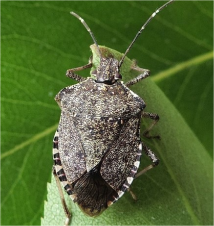
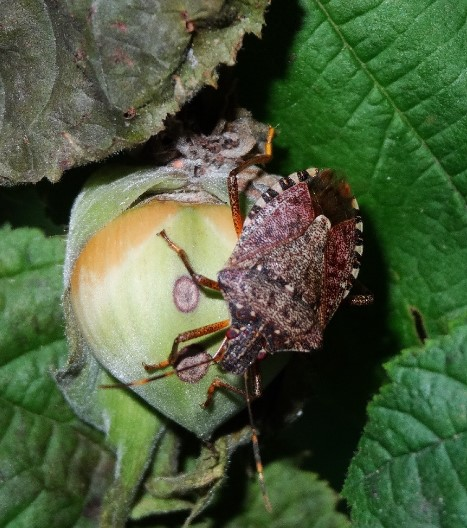

NOCCIOLE E CAMBIAMENTO CLIMATICO
Dalla Tuscia alle Langhe

NOCCIOLE E CAMBIAMENTO CLIMATICO
Dalla Tuscia alle Langhe
La Cimice Asiatica
Il più grande nemico della corilicoltura.

La cimice asiatica (Halyomorpha halys) è un insetto originario dell'Asia orientale
che negli ultimi anni si è diffuso in diverse parti
del mondo, inclusa l'Europa e l'America del Nord, ed è causa di notevoli danni alle nocciole quando si insediano nei noccioleti.
Questi insetti si nutrono succhiando la linfa dalle piante di nocciole, causando una perdita di nutrienti che può indebolire la salute complessiva degli
alberi e portare ad una crescita ridotta, che comporta una produzione inferiore di frutti.
Attraverso le loro punture, inoltre, penetrano nei gusci delle nocciole immature per raggiungere la loro polpa interna, provocando deformazioni e macchie
scure, compromettendo la qualità del raccolto.
Un altro problema è la loro capacità di diffondere malattie nelle piante di nocciole; trasmettendo agenti patogeni attraverso le loro punture causano malattie
come la necrosi batterica e la muffa grigia.
Le cimici asiatiche possono anche provocare la caduta prematura dei frutti, riducendo così il rendimento del raccolto e causando perdite economiche per gli agricoltori.
Infine, l'infestazione può influire sulla qualità delle nocciole stesse. I danni estetici causati dalle punture e la possibile presenza di contaminanti riducono il valore
commerciale delle nocciole, rendendole meno appetibili per i consumatori.
Esistono diversi metodi di controllo per gestire l'infestazione da cimice asiatica nei noccioleti.
Alcuni agricoltori utilizzano la polvere di caolino, che viene applicata sulla pianta durante il periodo di sviluppo del frutto. Inoltre, essendo proveniente da un
minerale, è un rimedio naturale che può sostituire metodi meno ecologici.
Alcune pratiche colturali possono ridurre l'attrattività dei noccioleti per le cimici. Ad esempio, la rimozione e la distruzione dei frutti caduti possono
aiutare a ridurre le fonti di nutrimento per le cimici. Inoltre, potrebbe essere utile considerare la rotazione delle colture o il posizionamento strategico
delle piante per disturbare il ciclo di vita delle cimici.
Alternativamente alcuni insetti predatori e parassitoidi si nutrono delle cimici asiatiche. L'introduzione di questi organismi può aiutare a ridurre la popolazione
di cimici; tuttavia, il controllo biologico richiede una gestione attenta per evitare effetti negativi sugli organismi utili.
Ma in che modo questi insetti rappresentano una sentinella al cambiamento climatico?
Alcuni studi suggeriscono che la diffusione della cimice asiatica in diverse parti del mondo potrebbe essere correlata ai cambiamenti climatici, che possono influenzare
la distribuzione e l'abbondanza degli insetti in vari modi.
Ad esempio, temperature più calde possono favorire la sopravvivenza di alcune specie, mentre i cambiamenti nei modelli di precipitazione possono influire sulla
disponibilità di risorse alimentari per gli insetti che, non incontrando antagonisti naturali, proliferano a dismisura.
Per quanto riguarda la cimice asiatica, si ritiene che i periodi di inverno più miti e le estati più calde abbiano contribuito alla sua diffusione in molte
regioni. Le temperature più elevate possono permettere alle cimici di sopravvivere durante l'inverno, consentendo loro di colonizzare nuove aree. Inoltre, le estati
calde possono favorire la loro riproduzione e accelerare il loro ciclo di vita.